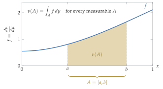
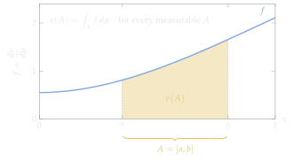

11 Absolute Continuity, Radon–Nikodym Theorem, and Lebesgue Decomposition
Note that it does not mean that \(\nu \leq \mu\) or vice versa. For example if we have \(\mu\) is the Lebesgue measure on \([0,1]\) and \(\nu\) is two times the Lebesgue measure on the same interval, we have both \(\nu << \mu\) and \(\mu << \nu\).
The measure \(\nu\) in (1) is often denoted simply by \(f\mu\). In fact, any measure which is absolutely continuous with respect to \(\mu\) has this form assuming \(\sigma\)-finiteness.


Note that every random variable \(X\) has a cumulative distribution function (CDF), defined from its distribution \(\mu_X\) (Definition 9.4) by \[F_X(x) = \mu_X\big((-\infty, x]\big) = P\big(X^{-1}((-\infty, x])\big).\] By Proposition 4.3 it is weakly increasing and right continuous. A probability density function (PDF), on the other hand, only exists when \(\mu_X\) is absolutely continuous with respect to the Lebesgue measure (Definition 11.1), and it is then the Radon–Nikodym derivative \(d\mu_X/dm\) (see the remarks after Theorem 11.3).
Conversely, given a function \(F\) with these properties, Proposition 4.4 gives a unique finite Borel measure \(\mu_F\) whose CDF is \(F\), and from \(\mu_F\) we can construct a random variable whose law is \(\mu_F\). Since \(\mu_F\) is finite it is \(\sigma\)-finite, but it need not be absolutely continuous, so it need not have a PDF. The Cantor measure \(\mu_C\) (Theorem 4.8) is an example: its CDF is the Cantor function, but \(\mu_C\) is singular, so it has no density.
Side topic: The Kullback–Leibler divergence
Radon–Nikodym derivatives give a natural way to compare two probability distributions. Let \((\Omega, \mathcal T)\) be a measurable space and let \(\mu, \nu\) be probability measures on it with \(\mu \ll \nu\). The Kullback–Leibler (KL) divergence of \(\mu\) from \(\nu\) is
\[KL(\mu \,\|\, \nu) = \int \log\frac{d\mu}{d\nu}\, d\mu,\]
where \(\frac{d\mu}{d\nu}\) is the Radon–Nikodym derivative of \(\mu\) with respect to \(\nu\) (Theorem 11.3). If \(\mu \not\ll \nu\), the KL divergence is set to \(+\infty\) by convention.
What it measures. The KL divergence measures how different \(\mu\) is from the reference distribution \(\nu\), so it plays the role of a distance between two distributions. The integrand \(\log\frac{d\mu}{d\nu}\) compares, point by point, how much mass \(\mu\) puts somewhere relative to \(\nu\), and the integral averages this log-ratio over \(\mu\). It is always nonnegative and equals \(0\) exactly when \(\mu = \nu\). In information theory, \(KL(\mu \,\|\, \nu)\) is the expected extra information needed to describe samples from \(\mu\) when using a code designed for \(\nu\).
The familiar formula with densities. Suppose both \(\mu, \nu \ll m\), with \(m\) the Lebesgue measure. By the Radon–Nikodym theorem they have densities \(p = \frac{d\mu}{dm}\) and \(q = \frac{d\nu}{dm}\), and these are exactly the probability density functions from elementary probability (see the remarks after Theorem 11.3). Then \(\frac{d\mu}{d\nu} = \frac{p}{q}\) where \(q > 0\), and \(d\mu = p\,dm\), so substituting gives
\[KL(\mu \,\|\, \nu) = \int p(x)\log\frac{p(x)}{q(x)}\, dx.\]
The KL divergence is also the standard training objective for normalizing flows, where one minimizes the KL divergence between a target distribution and a transformed base distribution; see the review by Papamakarios et al. (2021).
The decompositions is relate to the measure \(\mu\). The measure is split into an absolutely continuous part, which can be written as \(f_0 \mu\) for some \(f_0\) by Radon-Nikodyn, and one singular component to which \(\mu\) is “blind to”.
We mention some other important but simple decompositions. Given any \(\sigma\)-finite mesure space \((X, \mathcal M, \mu)\) with single points being measurable, we can decompose \(\mu\) into an atomic peice and continuous piece. If \(\mathcal A\) is the set of atoms, we write \[\mu = \mu\vert_{A} + \mu\vert_{A^c}\]and it is easy to check that these are mutually singular.
This is the measure-theoretic analogue of \(\epsilon-\delta\) continuity, where the role of distance bw points is replaced by \(\mu\) and the distance between function values is played by \(\nu(A)\). So the propositoin \(\nu << \mu\) is equivalent to \(\nu\) being continuous with respect to \(\mu\).